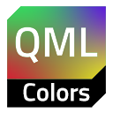

qml-colors¶


Struggling with colors?¶
Are you sick and tired of poorness of Qt Quick's color datatype as much as I am? Ever wanted to have an easier way of doing simple color transformations in QML bindings like following?
Rectangle { id: r1; color: 'red' }
Rectangle {
// oh god, I just wanted to add some transparency
color: Qt.rgba(r1.color.r, r1.color.g, r1.color.b, 0.8)
}
With this library you can…¶
…construct color objects¶
in many various ways
And even imperatively out of color-properties
Item {
Component.onCompleted: {
const c = q`yellow` // It looks like a string, but it's an object!
// this is expected
console.log(q`yellow`) // ⇒ #ffff00
// but let's try this
console.log(q`yellow`.r) // ⇒ 1.0
console.log(q`yellow`.g) // ⇒ 1.0
console.log(q`yellow`.b) // ⇒ 0.0
}
}
…use units¶
…rely on a whole bunch of auxiliary color functions¶
…chain as many transformations as you need¶
Rectangle {
color:
cc`#0000ff`
.adjustHue(-105 .deg)
.desaturate(20 .percent)
.mix('red', 85 .percent)
.adjust({alpha: -30 .percent})
.color // ⇒ #b33cc341
}
…work with colors imperatively¶
Rectangle {
color: {
let newColor = cc`darkorange`
console.log(newColor) // ⇒ #ffa500
console.log(newColor.hue, newColor.saturation) // ⇒ 0.108 1.0
newColor.hue = 20 .deg
newColor.saturation = 65 .percent
console.log(newColor) // ⇒ #d2642d
return newColor.color
}
}
…and maybe something else¶
but I don't even remember.
Wanna use it?¶
Convinced? Get started now!
Not yet? Anyway, read the documentation and you'll change your mind.